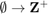
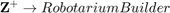
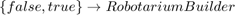
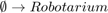

RobotariumBuilder
This class handles the creation of the Robotarium object. In particular, it controls and sets the parameters for your simulation/experiment.
Contents
Function Summary
- get_available_agents():  returns the number of available agents (random for each instantiation)
- set_number_of_agents():  sets the number of agents, returning the RobotariumBuilder object
- set_save_data():  sets whether to save data for this experiment.
- build():  builds a Robotarium object with the specified parameters
Example Usage
% Example showing potential usage of the RobotariumBuilder object. % Note that get_available_agents() returns the number of available % agents, which is random. If you need a particular number of agents, % this should be specified in the experiment descriptor when you % eventually submit your experiment to the Robotarium. % Or you can design your experiment to handle any number of agents.
% set_save_data() controls whether the Robotarium records % your simulation/experimental data.
robo_builder = RobotariumBuilder() N = robo_builder.get_available_agents() robo_obj = robo_builder.set_number_of_agents(N).set_save_data(true).build()
classdef RobotariumBuilder < ARobotariumBuilder %ROBOTARIUMBUILDER This class handles creation of the Robotarium object %that communicates with the GRITSbots. % This class is really just a helper to assist with creating the % Robotarium object. In particular, this object allows you to set % properties for your simulation and eventual experiment. Right now, % these properties are: number of agents and whether to save data. % THIS CLASS SHOULD NEVER BE MODIFIED % Gets properties from abstract class as well. properties boundaries = [-0.6, 0.6, -0.35, 0.35]; robot_diameter = 0.08 end methods function this = RobotariumBuilder() this.available_agents = randi(14) + 1; this.number_of_agents = -1; end function number_of_agents = get_available_agents(this) number_of_agents = this.available_agents; end function robotarium_obj = build(this) assert(this.number_of_agents > 0, 'You must set the number of agents for this experiment'); arena_width = this.boundaries(2) - this.boundaries(1); arena_height = this.boundaries(4) - this.boundaries(3); numX = floor(arena_width / this.robot_diameter); numY = floor(arena_height / this.robot_diameter); values = randperm(numX * numY, this.number_of_agents); initial_poses = zeros(3, this.number_of_agents); for i = 1:this.number_of_agents [x, y] = ind2sub([numX numY], values(i)); x = x*this.robot_diameter - (arena_width/2); y = y*this.robot_diameter - (arena_height/2); initial_poses(1:2, i) = [x ; y]; end initial_poses(3, :) = rand(1, this.number_of_agents)*2*pi; robotarium_obj = Robotarium(this.number_of_agents, this.save_data, initial_poses); end end end